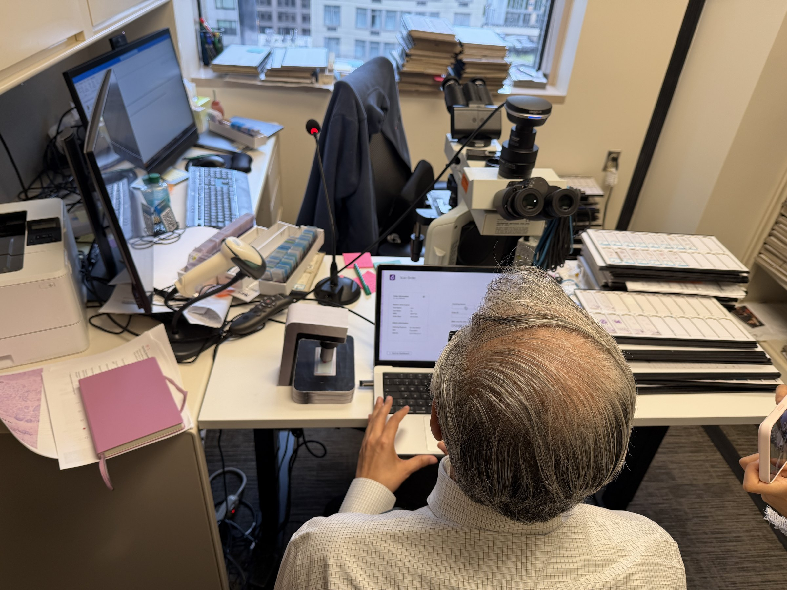
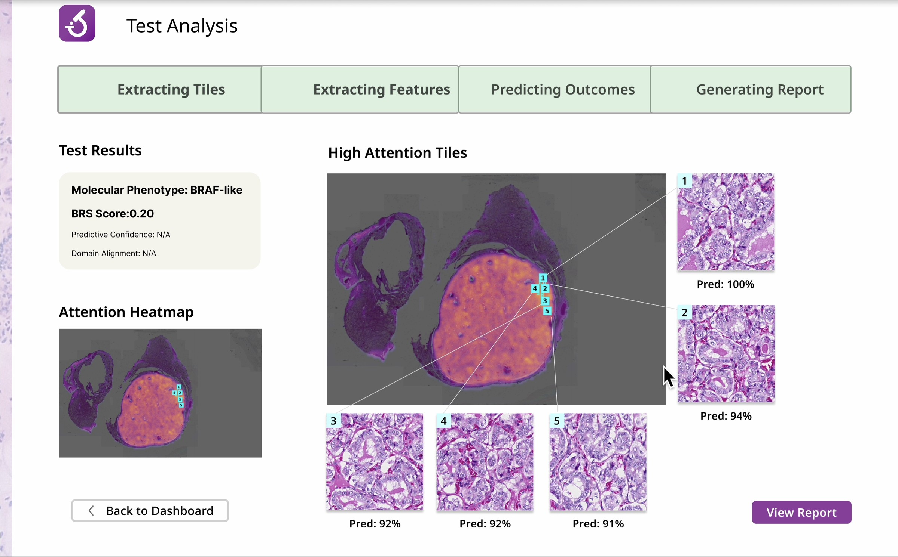
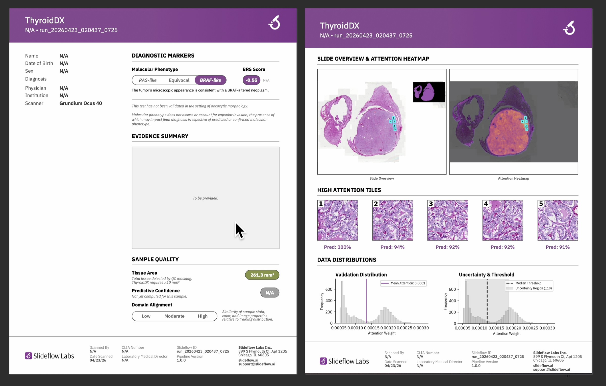

Validating a clinical AI product before it became a liability
Before the redesign, pathologists wouldn’t rate this tool above 3 out of 5 on trust, and some declined to rate it at all. After it, every survey item scored a 4 or 5, and the client productionized the recommendations.
The problem
SlideFlow Labs, a clinical AI team within UChicago Medicine, builds AI-powered diagnostic software for pathologists, using specialized models to identify computational biomarkers that eliminate the need for expensive, time-consuming external testing. Their first model ready for clinical validation addressed thyroid pathology, distinguishing PTC from NIFTP, a clinically meaningful difference with diagnostic and prognostic implications. The product existed but had never been tested with real users.
An unvalidated AI diagnostic tool in a clinical setting is a liability. The client needed to know whether pathologists would trust, accept, and use the product before investing further. I led the research and product validation effort, managing 2 designers and coordinating across ML engineers, physician scientists, and 12+ pathologists across 3 hospitals.
Will pathologists trust, accept, and use this tool? And how would we know before the client invested further?
Constraints
| Timeline | Pathologist sessions were scarce and non-recoverable. Every interaction had to be designed to extract maximum insight. |
|---|---|
| Stakeholders | 12+ thyroid pathologists across 3 hospitals, among the hardest clinical users to access. |
| Technical / domain | Findings had to survive clinical review; every claim needed to hold up to a physician scientist. |
| Business need | An unvalidated clinical AI tool is a liability. The client needed proof of trust before further development. |

Key decisions
With pathologist access this scarce, the wrong research approach was expensive in a way the schedule could not absorb. Five decisions shaped what we tested and, in turn, what shipped.
The temptation was to minimize user research given how hard pathologist time was to secure. We committed to it and designed every session to extract maximum insight per interaction, because a validation effort without the actual users is not validation.
Contextual inquiry showed that what “transparency,” “trust,” and “credibility” mean for an AI tool is entirely use-case dependent. We scoped to thyroid pathology only; generalizing would have made every finding weaker.
Rather than asking “does this feature work,” we asked “does this tool earn the right to be in a pathologist’s workflow.” That reframe determined what we tested, and it is why the result was a glass-box interface instead of a better black box.
We investigated whether the product was solving the right problem at all, and found that some pathologists had more pressing workflow concerns the tool could address more immediately than the diagnostic use case it was built for.
The instinct was to surface everything the model knew. When we tested that assumption, it failed. The flood of information confused experts instead of reassuring them. What pathologists needed was the right information at the right moment in their workflow.
How I measured success
What mattered was whether expert users would trust the tool enough to let it into their workflow. That's the leading indicator of clinical adoption, and the single thing an unvalidated diagnostic tool most needs to prove. We measured it with a structured rating across trust, clarity, and credibility dimensions. Five pathologists across all three hospitals rated the initial prototype. Five more, also across all three hospitals, rated the final one.
We used fresh pathologists for each round on purpose. Nobody had already seen the first prototype, so no one’s rating could be colored by memory of it. Pulling from all three hospitals both times kept it fair, so the change shows how thyroid pathologists as a group responded to the redesign rather than which five people happened to be in the room. Timing mattered too. Ratings came after pathologists had actually worked with the tool, at the end of contextual sessions, so the numbers captured informed judgment rather than a first impression.
The solution
The product moved from a black-box output to a glass-box interface. Instead of a bare result, pathologists see the model’s reasoning surfaced at the point in their workflow where it matters, in terminology validated through usability testing rather than raw technical specs. The design separated two distinct user modes, pathologist and technician, based on actual workflow mapping instead of assumed roles.
It also surfaced digital readiness as an adoption variable that differed by hospital type, and packaged market positioning intelligence the client did not previously have, including how pathologists actually perceive the product relative to larger competitors.

Outcomes

The client productionized our recommendations, implemented specific elements of the glass-box interface, expanded their model offering to additional use cases to position as a full-stack platform, and revised their go-to-market after discovering their original value proposition was already being promised by competitors.